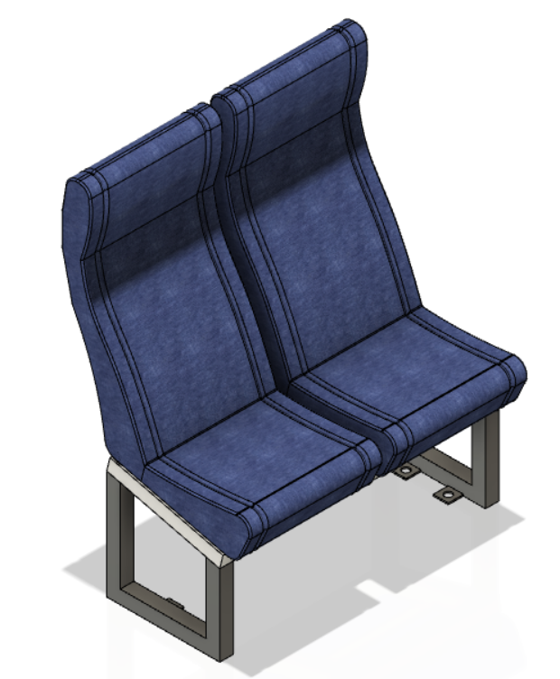
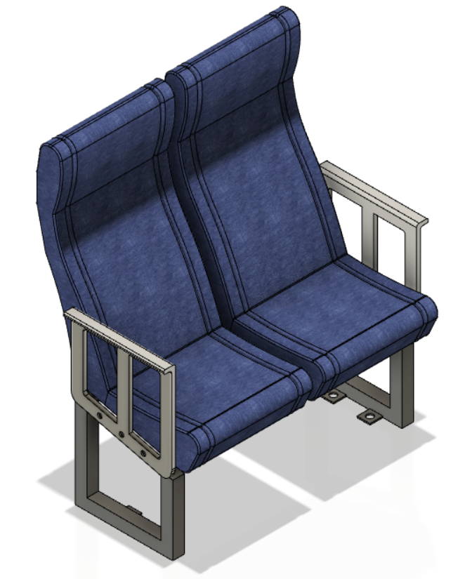

-

A3J AutoSeats
Propuesta para la automatización de una línea de manufactura y ensamblaje de sillas para buses intermunicipales
-

Proyecto Integrador
Buscando la integración y aplicación de las temáticas vistas durante la asignatura para la resolución de los diferentes problemas de un proyecto de automatización
Nuestra propuesta
Automatizar el proceso de fabricación y ensamblaje de sillas de buses intermunicipales
Con nuestra propuesta logramos automatizar el proceso de manufactura y ensamble de 2 sillas para buses intermunicipales: Silla sencilla y silla con reposabrazo. Se realizó este proyecto debido a que después de analizar el proceso actual se logró idear ciertas mejoras que ayudan a mejorar los indicadores de producción y aliviar cuellos de botella, siempre pensando en la satisfacción del cliente y cumplir sus necesidades.
Para esto, después de identificar la totalidad de los subprocesos que lo constituyen, se realizó una revisión bibliográfica de las técnicas y tecnologías utilizadas en la actualidad, que presenten una ventaja en la reducción de tiempos y aumento de la producción. Se validó el proyecto mediante una simulación de los dos procesos (manual y automatizada), así como un análisis económico del último.
De igual manera se desarrolló las tecnologías para los controladores y dispositivos de supervisión, para los cuales se probó su funcionamiento mediante comisionamiento virtual.
Sillas propuestas

Silla sencilla
Silla para bus intermunicipal constituida por 2 cojines y 2 espaldares hechos de poliuretano y forrados con cuerina y yumbolón, estas se encuentran ancladas a una estructura mecánica no reclinable que permite la unión con la estructura del bus.
Esta silla brinda comodidad al usuario, sobre todo para servicios de grandes trayectos, además, debido a los materiales que lo constituyen, permite su limpieza con gran facilidad y un desgaste lento a comparación con otros materiales.
Silla con reposabrazo
Silla para bus intermunicipal constituida por los mismos elementos y materiales que la Silla Sencilla, con la diferencia que se agregan 2 reposabrazos en ambos costados con un mecanismo para permitir al usuario que lo posicione horizontal o verticalmente.
Esta silla brinda al usuario mayor confort y mejor ergonomía, ya que permite apoyar los brazos a un costado y que no se carguen en todo el trayecto del viaje, disminuyen la fatiga en estos.
